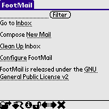
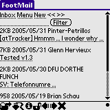
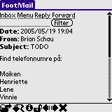
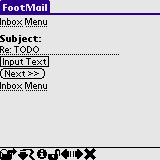
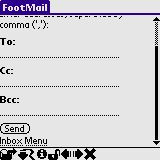
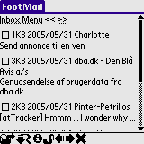

FootMail is capable of most of the basic functions required from a mail client:
Point your web browser to http://your.domain/FootMail-x.y/ to access the menu. FootMail is best viewed using a xhtml browser such as Mozilla FireFox or most Web browesers found on PDAs and on Mobile Phones.
Click Go to Inbox to see a list of mails in your Inbox. Click Compose New Mail to create a new mail. Click Clean Up Inbox to delete mails from your Inbox. Click Configure FootMail to configure FootMail on the fly - this, however is best done using a normal web browser on your desktop PC. Enter a search term in the filter box and click Filter to only see the mails which matches the search term. The search term is looked for in the from email address and in the subject line.
Your Inbox holds all mails. There are no folders - only a plain Inbox view. Click New to create a new mail or use the << and >> to browse through the mail box. Clicking a mail subject will open up that mail.
Click the Reply or Forward buttons to reply to the mail or forward it.
When replying or forwarding a mail, you first get a chance to edit the content. The original text will be indented using whatever character(s) you put in the Indent String parameter on the configure pane.
When ready, click Next and you will be prompted for the email addresses of the receiver. If more addresses needs to be filed in separate the addresses with a comma (','). Some of the fields may have been pre-filled if this is reply to a previous mail. Click Send to send the mail.
Occasionally you need to do some minor clean up. Use the Clean Up Inbox tool to delete the unwanted mail. If you have checked the Auto-check deleted checkboxes on the configuration form, all the checkboxes in the mail list view will be checked. Just uncheck the mails to keep and tap deleted. Talk about a timesaver, huh?
Currently there is limited support for viewing attachments in mails. Only HTML attachments can be viewed in a limited form (ie. all HTML tags are removed). Work will continue on this ...